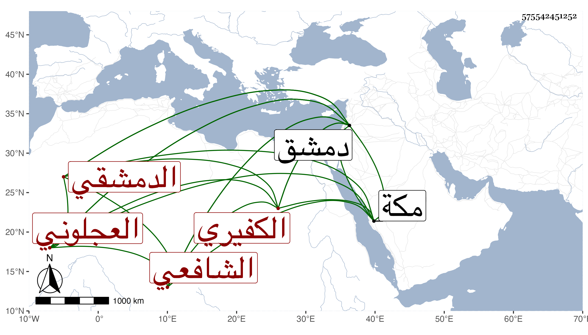

0902Sakhawi.DawLamic.ITO20230111-ara1.EIS1600.575542451252
Biography ID: 575542451252
244
محمد بن أحمد بن موسى بن عبد الله الشمس أبو عبد الله الكفيري العجلوني ثم الدمشقي الشافعي . ولد في سابع عشرى شوال سنة سبع وخمسين وسبعمائة بالكفير مصغر من عمل دمشق وانتقل إليها فسمع من ابن أميلة بعض سنن أبي داود ومن ابن قواليح صحيح مسلم ومن المحب الصامت ويحيى ابن يوسف الرحبي في آخرين ، وأجاز له غير واحد واشتغل عند الزهري وابن الشرشي وابن الجابي والشهاب الغزى ولزمه كثيرا وتخرج به حتى صار عين جماعته واشتهر بحفظ الفروع من شبيبته وبرع في الفقه وبقي أحد الأعيان وناب في الحكم عن العلاء بن أبي البقاء فمن بعده ، وكان مع علمه عارفا بصنعة القضاء أشعري الإعتقاد سليم الصدر بشوشا حسن الشكالة مليح القامة كث اللحية مهابا متواضعا مع الطلبة وغيرهم طارحا للتكلف ، درس وأفتى وكتب الكثير بخطه لنفسه وغيره وصنف التلويح إلى معرفة الجامع الصحيح واستمد فيه من البدر الزركشي والكرماني وابن الملقن وزاد فيه أشياء مفيدة وهو شرح جيد في خمس مجلدات والأحكام في أحكام المختار واختصره وسماه منتخب المختار في أحكام المختار واختصر الروض للسهيلي وسماه زهر الروض ومعين النبيه على معرفة التنبيه ورأيت من قال إنه عمل نكت التنبيه وهي حسنة في أربعة أجزاء فيحتمل أن يكون غير المعين وله نظم كثير بالطبع لا عن معرفة بالعروض وغيره من أسبابه فمنه :
| خرجت من الدنيا كأني لم أكن | دخلت اليها قط يوما من الدهر |
| تبلغت فيها باليسير وقد كفى | وحصلت منها ما عمرت به قبري |
| يؤنسني منه إذا ما سكنته | ونعم رفيق صاحب لي إلى الحشر |
| فيا عامر الدنيا رويدك فاقتصر | فإن سهام الموت تأتي وما تدري |
| وإياك التفريط فالغبن كله | لمن منح الدنيا وراح بلا أجر |
وقد حج غير مرة وجاور بمكة سنة سبع وعشرين وحدث بها وببلده سمع منه الفضلاء . قال شيخنا في معجمه : أجاز لنا نظما وولي تدريس العزيزية شركة لغيره والصارمية وعمرها بعد الفتنة ، وممن تفقه به الشمس الباعوني الآتي قريبا . ومات بدمشق بعد مرض طويل في يوم الإثنين ثالث عشر المحرم سنة إحدى وثلاثين ودفن بمقبرة الصوفية وكان يوما مشهودا وشيعه خلق . ذكره شيخنا في معجمه وإنبائه وابن فهد في معجمه وابن قاضي شهبة والمقريزي في عقوده وآخرون رحمه الله وإيانا .
